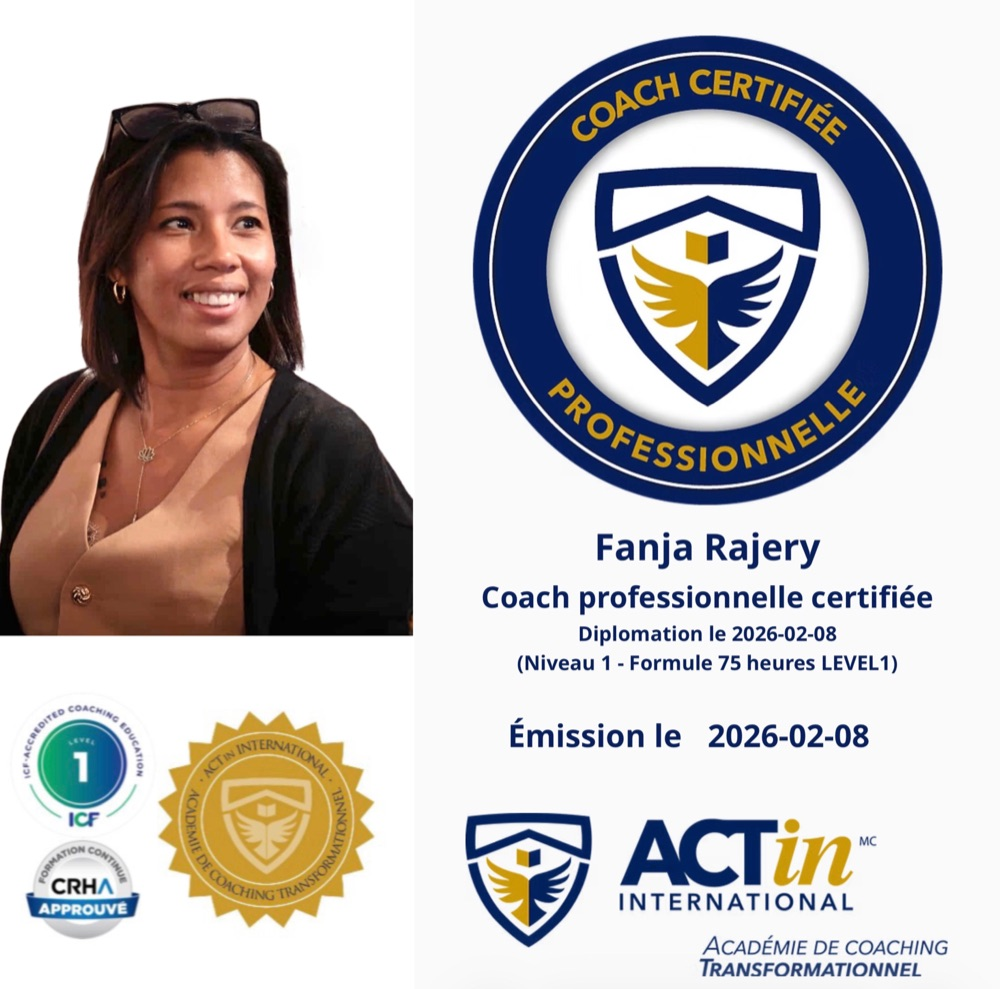
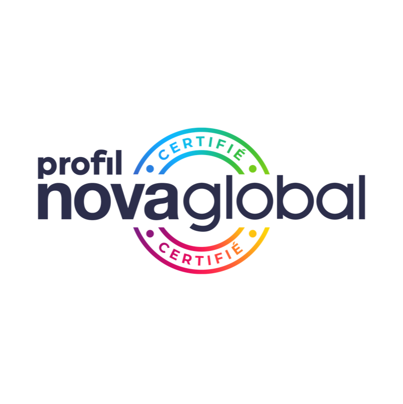

Mon rôle n’est pas de vous dire qui devenir. Il est de vous accompagner pour révéler le leader que vous êtes déjà. Car le leadership commence toujours par un travail intérieur.


Je m’appelle Fanja Rajery.
Mon parcours est celui d’une dirigeante, d’une mère, d’une entrepreneure et d’une femme qui a appris à avancer avec résilience.
Au fil des années, j’ai évolué dans des rôles de gestion et de direction, accompagnant des équipes, portant des projets et contribuant à la transformation d’organisations et de communautés. Ces responsabilités m’ont amenée à naviguer dans des environnements exigeants où les décisions comptent, où l’humain reste central et où chaque leader doit trouver sa propre manière d’habiter son rôle.
Mais mon parcours ne s’est pas construit uniquement dans les salles de réunion.
Il s’est aussi construit dans la vie réelle : dans les défis d’une mère qui élève et guide, dans les risques d’une entrepreneure qui crée, et dans les moments où la vie demande de se relever, se redéfinir et continuer à avancer.
Ces expériences m’ont profondément transformée.
Elles m’ont appris que le leadership ne se limite pas à une fonction ou à un titre. Le leadership est une posture intérieure : la capacité de rester fidèle à ses valeurs tout en assumant des responsabilités, en prenant des décisions et en avançant avec courage.
C’est de cette conviction qu’est né Tatamo Coaching.
Aujourd’hui, j’accompagne des leaders, dirigeants, professionnels et femmes en transition qui souhaitent clarifier leur vision, renforcer leur posture et diriger avec plus de cohérence et d’impact.
Mon approche combine vision stratégique, connaissance de soi et transformation personnelle. J’intègre notamment des outils comme le Profil Nova, qui permet de mieux comprendre les talents naturels, les motivations profondes et la manière dont chacun influence son environnement.
Mais au-delà des outils, mon travail consiste avant tout à créer un espace où l’on peut prendre du recul, penser avec lucidité et retrouver une direction claire.
Je crois profondément que chacun possède un potentiel de leadership unique. Lorsqu’il est reconnu, compris et assumé, il devient une force de transformation pour soi-même et pour les autres.
C’est ce chemin que j’ai moi-même appris à parcourir — et que j’accompagne aujourd’hui chez celles et ceux qui choisissent de diriger, transformer et créer avec conscience.
Une question ou besoin de plus d'informations ?
Veuillez remplir le formulaire pour planifier un échange.